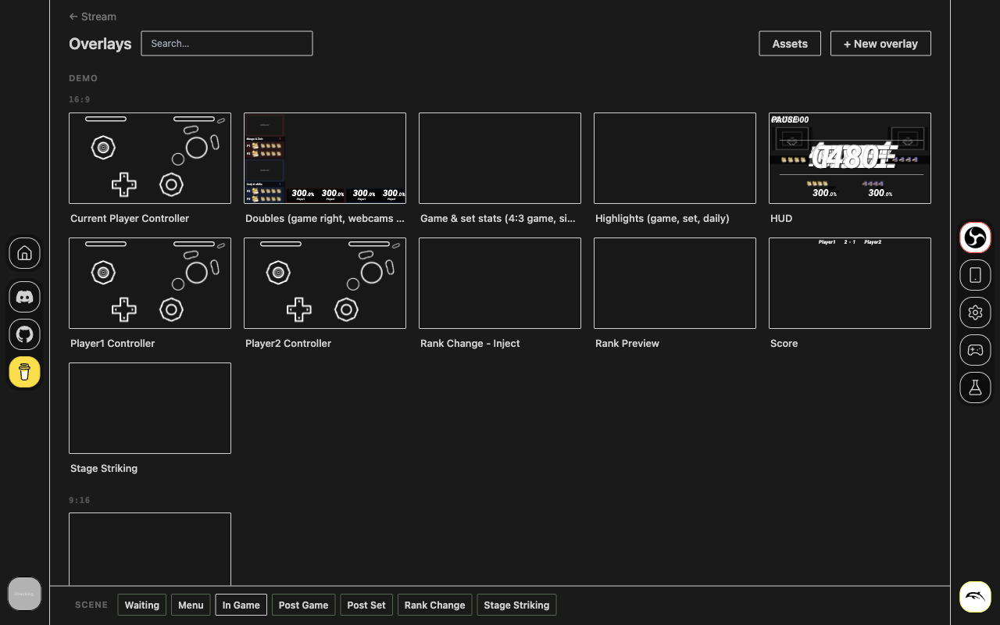
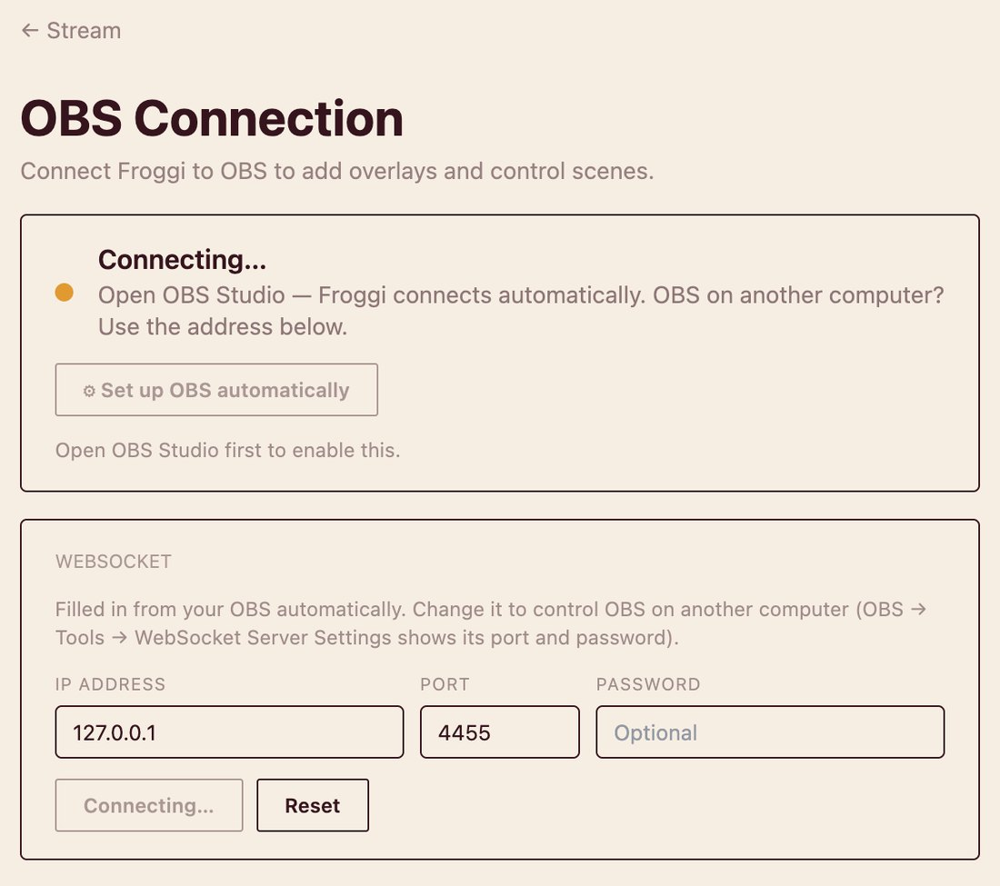
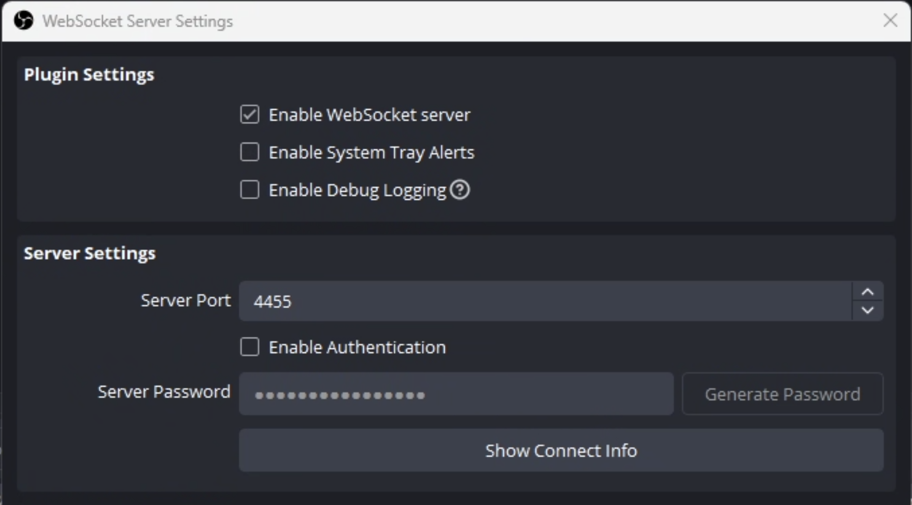
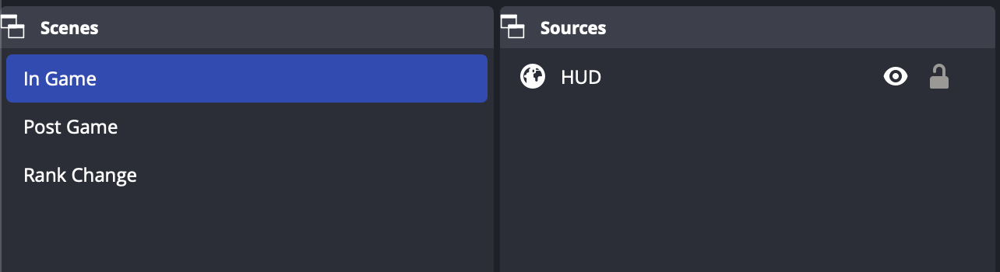

OBS in one click
Adds your overlay and switches scenes by itself.



What it gives you
With OBS connected, Froggi and OBS work as one:
- Overlays in one click — Froggi adds them to your OBS scene at the right size.
- OBS reacts to the game — switch to your game scene when a game starts, a camera scene when it ends.
- Control OBS from the Dashboard — scenes, sources, volume and the replay buffer, also from your phone.


How Froggi picks the scene (Scene switching flow)
Scenes (what overlays show: Waiting, Menu, In Game, Post Game, Post Set, Rank Change, Stage Striking) are switched only by flows. Froggi ships an enabled "Scene switching" flow with the default rules — edit it to change them.
How to set it up
Connect OBS
Open OBS Studio, then in Froggi go to Stream → OBS Connection and click ⚙ Set up OBS automatically. Froggi turns on OBS's WebSocket server for you — if OBS asks, restart it and Froggi connects by itself.

Connected? The status turns green, and so does the border of the OBS icon in the sidebar.
Didn't connect? Do it by hand
- In OBS open Tools → WebSocket Server Settings.
- Tick Enable WebSocket server. Note the Server Port (usually 4455) and, if authentication is on, the password (Show Connect Info).
- In Froggi, under WebSocket on the OBS Connection page, enter the IP address (
localhostwhen OBS runs on this computer), the port and the password, then click Connect.

The same steps connect Froggi to OBS on another computer on your network — use that computer's IP address.
Add an overlay
- Go to Stream → Overlays and open your overlay.
- Click Embed → Add to OBS: it lands in your current OBS scene as a browser source, sized right.
- Not connected? Copy the local URL and add a Browser source in OBS with it.

Check it
The editor shows placeholder data, so OBS can look different until a game runs. To check without playing, press ▶ Run replay in the overlay editor: Froggi plays your latest replay through every scene (Menu → In Game → Post Game).
Next: the Remote control OBS tutorial makes OBS switch scenes by itself and lets you run it from your phone.